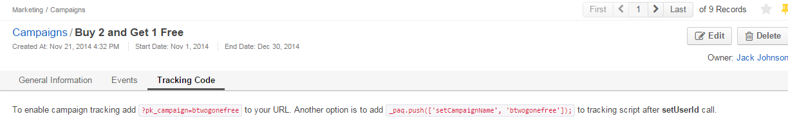

Marketing Campaigns¶
The marketing campaign in Oro application is used to define general details of the marketing activity and monitor its flow and results.
You can include any amount of Email Campaigns and Tracking Website records into one Campaign and get the full picture to evaluate the campaign efficiency.
This article describes the ways to create, manage and view the Campaign records.
Create a Marketing Campaign¶
To create a new marketing campaign:
Navigate to Marketing > Campaigns in the main menu.
Click Create Campaign in the top right corner to get to the Create Campaign page.

In the General section, provide the following information:
Field Description Name* Name used to refer to the campaign in the system. Code* Unique code of the campaign that is used to generate its tracking settings. May contain only alphanumeric symbols, dashes, and underscores. Report Scale* Defines default time scale of the events graph. The next larger scale is chosen if there are over 40 records Owner* Limits the list of users that can manage the campaign to users, whose roles allow managing campaigns of the owner (e.g. the owner, members of the same business unit, system administrator, etc.). Start Date Optional. End Date Optional. Description Optional. Budget Optional. Note
Custom fields may be added, subject to specific business needs.
Note
The default Sender Email and Name values are defined for all the emails generated in Oro application within different marketing campaigns by the corresponding configuration settings (navigate to the System > Configuration in the main menu and then to the System Configuration > Email Configuration in the panel at the left side of the page).
Once you finish configuring the marketing campaign, click Save and Close in the top right corner of the page.

Manage Marketing Campaigns¶
The following actions are available for a campaign after you navigate to the Marketing > Campaign in the main menu:
- Delete the campaign from the system:
- Edit the campaign:
- View the details of the campaign:
View Marketing Campaign Details¶
To view the Marketing Campaign details:
- Navigate to Marketing > Campaigns in the main menu.
- Click on the Marketing Campaign to preview its contents.
In the General section, you can see the campaign plan or configuration (code, start and end date, budget, etc.).
In the Events section, you can find the events summary chart and detailed events report collected from the related marketing sources.
Note
The event is logged once a user access a pre-defined part of the Website following the campaign. Recurring access is logged as a separate event.
In the example above users have accessed the site 36 times, twenty-two out of these times, they’ve made an order and eight times they’ve viewed some item details.
Campaign events include the events logged for related Email Campaigns and Tracking Website records.
In the Tracking Code section, you can copy a tracking code that may be incorporated into the URL or the script on the website page. With this code, you can link an action on the website with the marketing campaign and monitor user activity via the tracking website and the marketing campaign statistics.

Related Topics on Marketing Automation